WiseMind for Android
Need someone right now? Call the Suicide Crisis Helpline on 0800 567 567, or 112 for emergencies.
WiseMind is a free Android app, made in Cape Town, that keeps breathing exercises, DBT skills, helplines and local meetings together on your phone for when things get hard. There is no account, nothing is tracked, and it works offline.
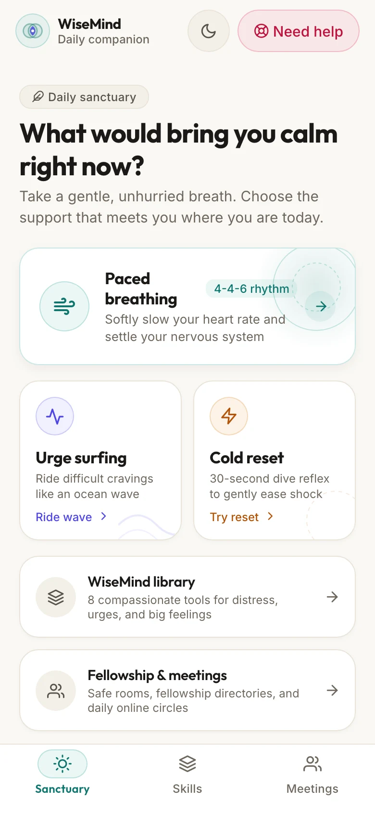
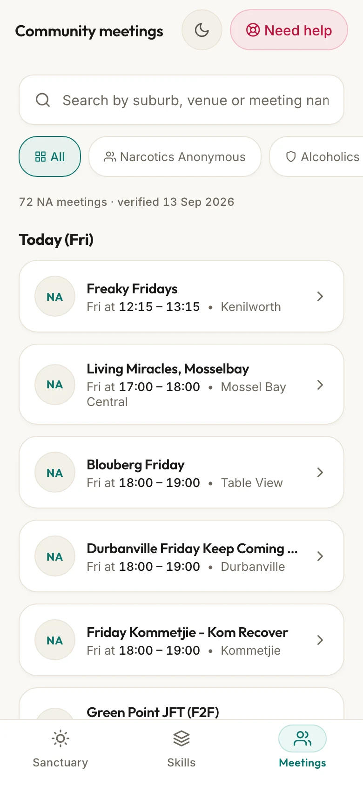
Free on Android. Works offline.
When you are overwhelmed, it is hard to think your way out. These tools start with something simpler: your breath, your heartbeat, a splash of cold water.
Paced breathing makes each out-breath a little longer than the in-breath. It is one of the gentlest ways to tell your body it is safe to slow down.
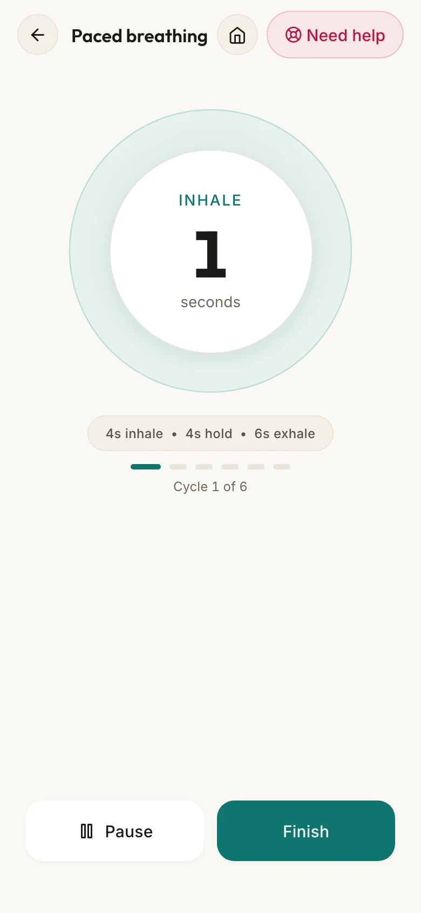
Urge surfing treats a craving like a wave: it rises, peaks and passes, usually within 15 to 20 minutes. The timer keeps you company while it does, so you can let it pass without acting on it.
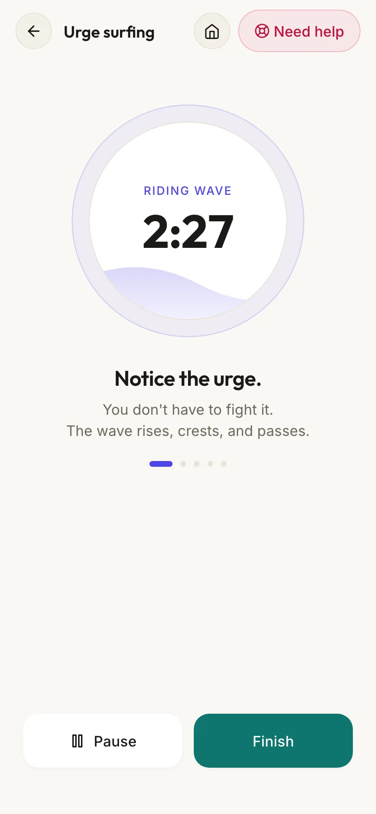
Cold reset uses cold water on your face to set off the dive reflex, which slows your heart within seconds. It is the T in the DBT skill TIPP, and the app counts you through it.
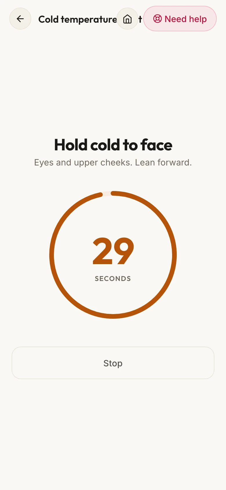
The DBT skills library has STOP, TIPP, Wise Mind and more, written in plain words and broken into small steps you can follow when thinking is hard.
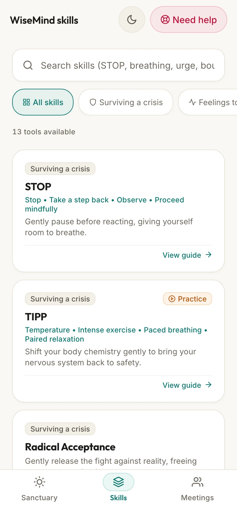
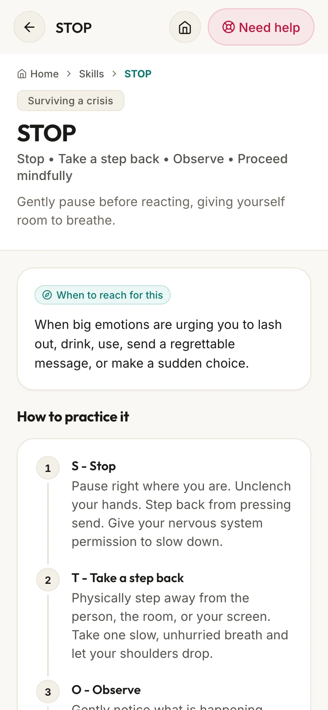
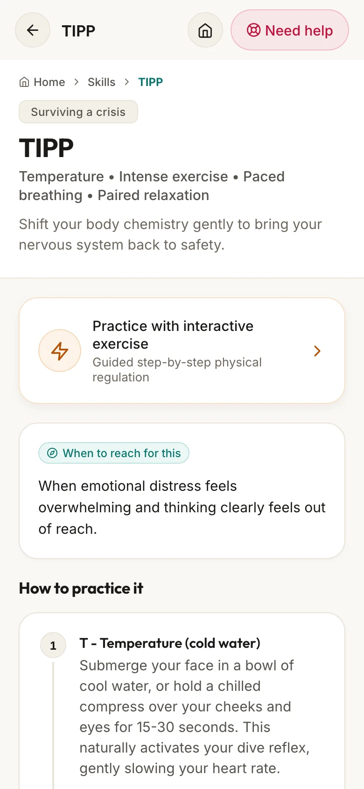
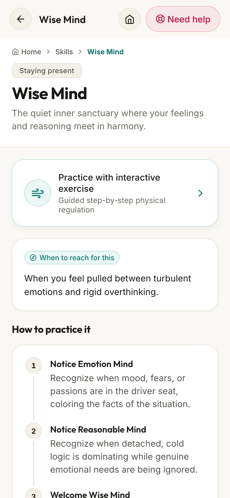
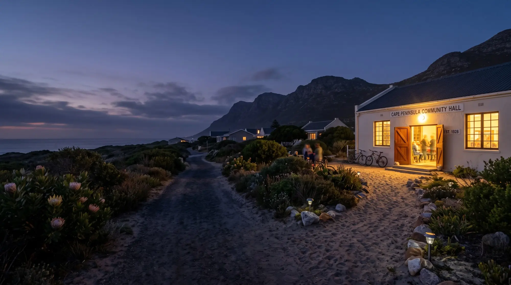
Sometimes what helps most is being in a room with people who understand. Meetings lists NA meetings across the Western Cape, in person and online, with directions one tap away. For AA, it links straight to AA South Africa's own meeting list and helpline.
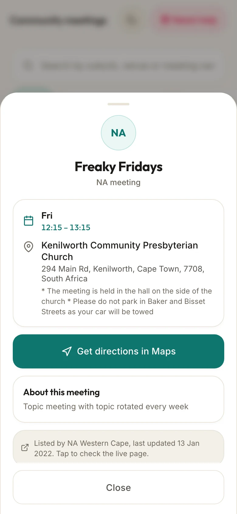
If you open WiseMind in the middle of a panic attack or a craving, every extra screen gets in the way. So it keeps to four rules.
No sign-up, email or password. You open it and it is ready.
The app never asks who you are and does not save or send anything about you. No analytics, no cloud.
Every timer, skill and meeting address is inside the app, so it works in airplane mode and during loadshedding.
112 and the South African helplines are one tap away from any screen.
The skills you learn, the people you can call and the way to a meeting tend to end up scattered: a worksheet, a screenshot, a number you can't find when you need it. WiseMind keeps them in one place.
It is for anyone in Cape Town who wants their support close, and for people passing through who need a meeting, a breathing exercise or a helpline in a city they don't know yet. It is free, and it will be open source from the day it lands on Google Play.
Made in Cape Town, with care.
WiseMind keeps these free South African lines one tap away inside the app. They are here too, as listed by SADAG.
If talking is too much, SADAG's Cipla Mental Health WhatsApp chat is on 076 882 2775, from 8am to 5pm. Numbers checked against SADAG's list on 26 September 2026.
When you are flooded, the thinking part of your brain goes quiet, and it is hard to reason your way down. Slow breathing and cold water work on the body directly. Once you have settled a little, the skills are much easier to use.
No. It is a pocket companion for the moments in between, not treatment. It works best alongside a therapist, a doctor or a fellowship. If you are in danger, call 112 or the Suicide Crisis Helpline on 0800 567 567.
The skills come from Dialectical Behaviour Therapy (DBT), developed by the psychologist Marsha Linehan. Urge surfing comes from Alan Marlatt's work on relapse prevention. Cold water on the face sets off the dive reflex, the same reflex that slows a swimmer's heart underwater, and DBT uses it as the T in TIPP. WiseMind puts these in plain words. It does not replace learning them with a therapist.
NA meetings come from the public NA Western Cape meeting list, refreshed before every release, and the app shows the date they were fetched. AA South Africa publishes its list only on its own site, so WiseMind links you there and to the AA helpline instead of copying it. Nothing in the list is made up.
No. Everything is inside the app, so it works in the mountains, during loadshedding or in airplane mode.
None. There is no sign-up and nothing to type in, and the app does not send anything anywhere. The only thing it saves is whether you chose the light or dark look. The privacy page has the details.
It will be free, with no account and nothing to set up. The link will be here the day it is on Google Play.
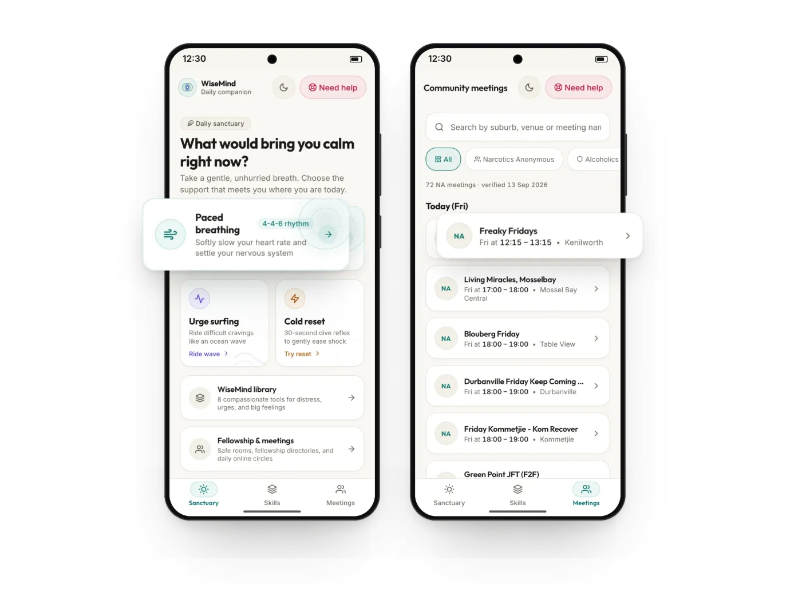
Free on Android. Works offline.